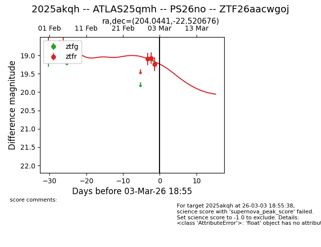
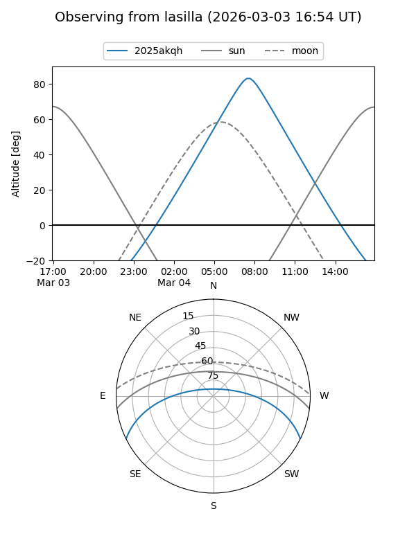
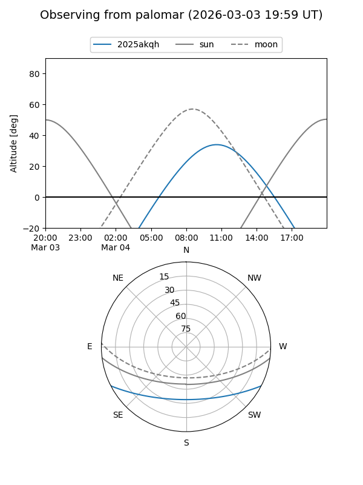
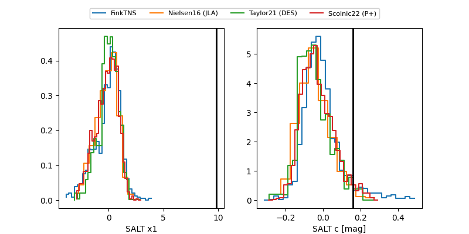

2025akqh
Target 2025akqh at 2026-03-03 18:57
Aliases and brokers:
FINK: link
Lasair: link
ALeRCE: link
TNS: link
YSE: link
alt names
ZTF26aacwgoj (ztf,fink_ztf)
2025akqh (tns,yse)
ATLAS25qmh (atlas)
PS26no (panstarrs)
Coordinates:
equatorial (ra, dec) = 204.0441,-22.52068
equatorial (HMS+DMS) = 13:36:10.59,-22:31:14.44
galactic (l, b) = (316.2981,+39.18711)
Flags:
Photometry:
last ztfr=19.24
5 ztfr detections
Lightcurve

Visibility


Additional plots
